生平经历
早年经历
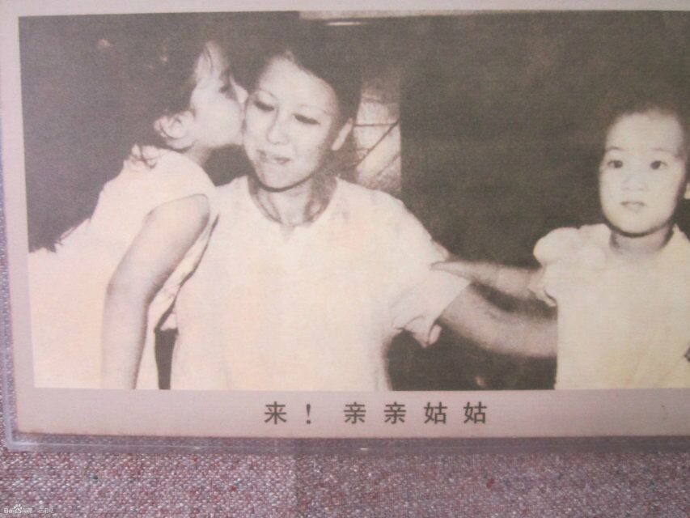陈平祖籍浙江省定海，据陈平家谱《陈氏永春堂宗谱》记载陈平祖上早期从河南迁往浙江。父陈嗣庆是成功的律师、母缪进兰，陈平1943年出生于重庆，排行第二，有一个姐姐陈田心与二个弟弟陈圣、陈杰。姐姐陈田心比三毛大3岁。。抗日战争胜利后跟着父母搬到南京，再迁到台北。陈平在台北入读中正国民小学，1954年考入台湾省立台北第一女子中学。小时就喜欢捡拾别人丢弃的物品把玩，自得其乐。
初中休学
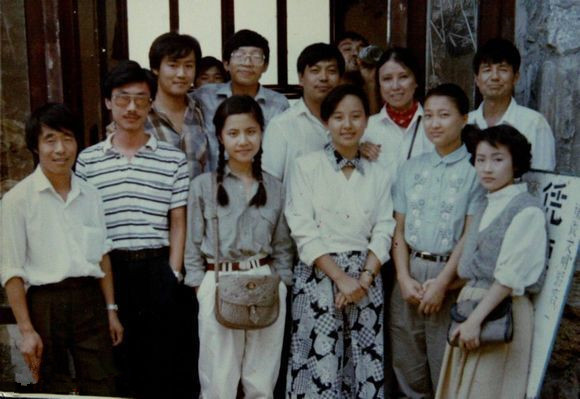1955年陈平初二的时候，数学常得零分。至第二学期陈平发现，数学老师每次小考都是课本后面的习题。为了不要留级，陈平把题目背下来，小考一连考了六个一百分。数学老师开始怀疑她作弊。陈平对老师说：“作弊，对我来说是不可能的，就算你是老师，也不能这样侮辱我。”于是数学老师出了题目叫陈平作答，她得到零分。老师当着全班的同学用毛笔在她的眼睛周围画了两个代表零蛋的大圈羞辱陈平。经此羞辱，陈平第二天在教室昏倒，心理开始出现了严重的障碍，后来经常逃学到公墓看小说，最后终于休学。1956年一度复学，仍经常逃学到图书馆看书，后正式退学。刚休学时，陈平被父母转进台北美国学校，被送去学插花、钢琴、国画，和名家黄君璧习山水，向邵幼轩习花鸟。她喜欢看书，她父亲就教她背唐诗宋词，看《古文观止》，读英文小说，但是陈平经此打击，患上忧郁症，一直处于自我封闭的心态。据说陈平曾割腕自杀，也曾看过心理医生，但一周一次的心理治疗并无帮助。
学画经历
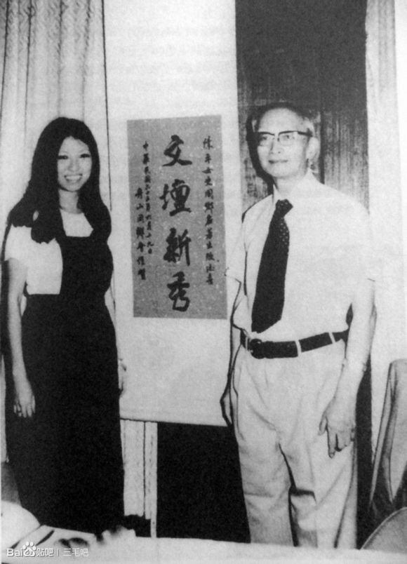陈平关在家中一段时间。姐姐陈田心的朋友陈骕在随顾福生学画油画。陈平非常羡慕，于是也随顾福生习画。多年之后陈平回忆初见顾福生的情景：
“许多年过去了，半生流逝之后，才敢讲出：初见恩师的第一次，那份‘惊心’，是手里提着的一大堆东西都会哗啦啦掉下地的‘动魄’。如果，如果人生有什么叫做一见钟情，那一霎间，的确经历过。”—— 三毛 《我的快乐天堂》
一开始顾福生教陈平素描与水彩画，是当时除了父母外，唯一与陈平沟通的人。后顾福生因要出国介绍韩湘宁为陈平学画的老师，后来韩湘宁也因要出国又介绍了彭万墀。文学启蒙
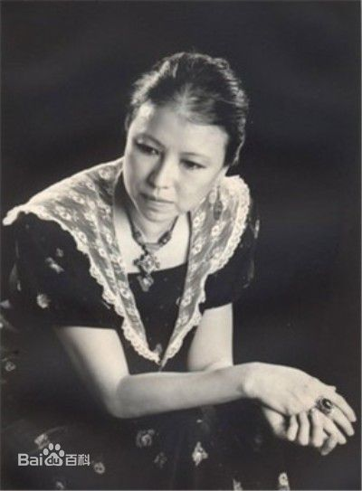顾福生不是教育家，却鼓励陈平在文学的领域发展，帮助她找到自己的方向。除了引介《笔汇》与《现代文学》杂志，并将波特莱尔、左拉、卡缪、陈映真等作家的作品介绍给陈平，开启她对当时台湾文坛的认识。顾福生并将一篇陈平的文章转交他的好友《现代文学》杂志主编白先勇，从此打开陈平自我封闭的心态，改变了陈平的一生。
1962年12月，署名陈平的文章《惑》经顾福生推荐在白先勇主编的《现代文学》杂志第十五期发表，给陈平带来极大的鼓励。白先勇后来回忆《惑》是一则人鬼恋的故事，的确很奇特，处处透著不平常的感性，小说里提到《珍妮的画像》，那时台北正映了这部电影不久，是一部好莱坞式十分浪漫离奇人鬼恋的片子，这大概给了三毛灵感[。”之后陈平开始在报章杂志投稿，1963年在《皇冠杂志》十九卷第六期发表《月河》。
入文化学院
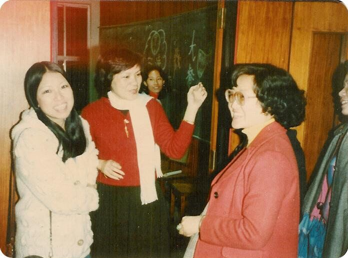陈平很仰慕白先勇的同学陈秀美，顾福生亦介绍陈秀美作陈平的朋友，鼓励陈平走出自我封闭的生活。陈秀美觉得当时三毛很自恋。陈秀美并曾以三毛为原型，写了一篇小说《乔琪》。1964年陈秀美鼓励陈平去向文化学院董事长张其昀请求入学文化学院作没有学籍的选读生。结果获张其昀特许，至该院哲学系当选读生，没有高中学历的陈平成绩优异。
陈平曾对当时的作品《雨季不再来》一书作出以下的评论“《雨季不再来》还是一个水仙自恋的我。我过去的东西都是自恋的。如果一个人永远自恋那就完了。……很多人可以看到我过去是怎样的一个病态女孩。”文化学院教授胡品清亦在《皇冠》与《联合报副刊》分别发表了写给Echo的书简。“胡对她的印象是：一个令人费解的、拔俗的、谈吐超现实的、奇怪的女孩，像一个谜。1967年她出国后一个月，胡的《断片三则》之一描写她：喜欢追求幻影，创造悲剧美，等到幻影变为真实的时候，便开始逃避。”
初恋
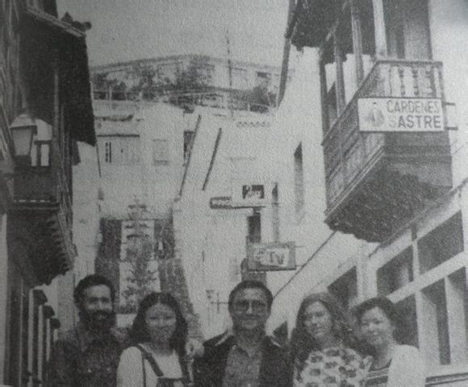在文化学院时，陈平仰慕同校已以舒凡为笔名出版两本书的才子梁光明。两人开始交往。梁光明升上大四时，大三的陈平以申请去西班牙留学逼梁光明作出承诺，结果陈平办妥出国手续反而造成两人分手。
游学西班牙、德国、美国
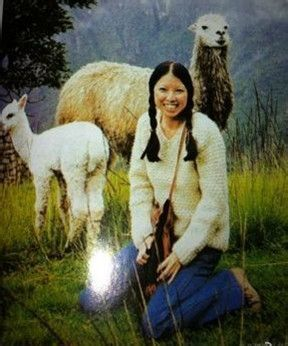1967年赴西班牙留学，先学西班牙文，半年后入马德里文哲学院。在西班牙时遇到还在读高三的荷西·马利安·葛罗。后就读于德国西柏林哥德书院得到德文教师证书，又到美国芝加哥伊利诺伊大学 ，本想专攻陶瓷后来在法律图书馆打工。留学期间不时把握机会打工赚钱，当过西班牙马略卡岛导游、德国商店香水模特、美国图书馆员等，游历过东德、波兰、南斯拉夫、捷克、丹麦等国。在这期间她也交了几位男朋友。在西班牙时，有一日本籍的富商同学；在德国时有一名后来成为外交官的德国同学；在美国时，有一名台湾籍的留美博士。但是都无结果。
与荷西结婚
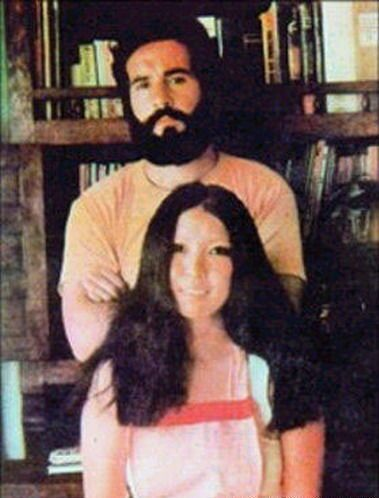与六年前遇到的西班牙人荷西·马利安·葛罗重逢。当时尚是高中生的荷西此时已大学毕业，服完兵役，也有了潜水师执照。原本荷西计划与一群朋友一同乘帆船去希腊地中海一带潜水旅游，邀请陈平担任厨师同行，但陈平对撒哈拉沙漠情有独锺。
后来荷西没有去乘帆船，却在西属撒哈拉磷矿厂找到工作。1974年，陈平在非洲沙漠小镇（西属撒哈拉的阿尤恩）与荷西结婚，开始两人在西属撒哈拉的婚姻生活。荷西送给陈平的结婚礼物是他花了一番功夫在沙漠中找到的一副完整的骆驼头骨。陈平非常喜欢这份结婚礼物，以后一直保存著。
返国与情伤
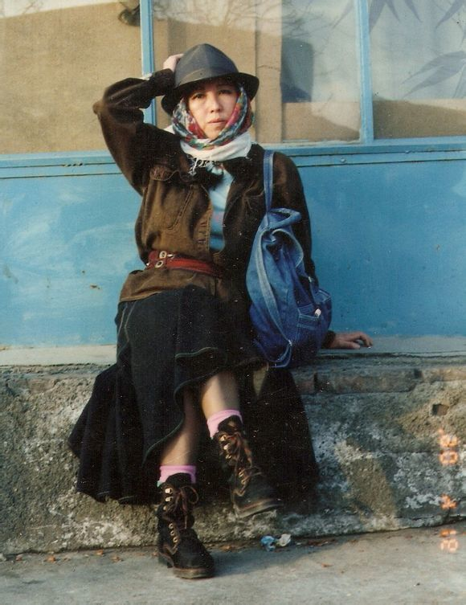1971年返国，应张其昀之聘，在中国文化学院德文系、哲学系任教，也在政工干校与实践家专教课。70年代，台湾明星咖啡屋风华正茂，有说法称此期间陈平在“明星”咖啡厅结识一位画家邓国川，因非常喜欢对方的作品而答应了画家的求婚，遭到家人集体反对，陈平不顾众多反对之声坚决要与画家结婚，即将举行婚礼前，却发现了对方是有妇之夫。同年，喜欢运动的陈父鼓励女儿与他一起打网球，在网球场上他们认识了一位年龄较长的德国教师，后来陈平与之相识，相爱，一年后，陈平答应了德国教师的求婚，有一天他们一起去订制结婚的名片，结果当天晚上，德国教师却心脏病突发猝死，之后陈平伤心欲绝，服安眠药自杀，但被救回。17年后，三毛回忆此事，“那盒名片直到今天还没有去拿。”
成名撒哈拉
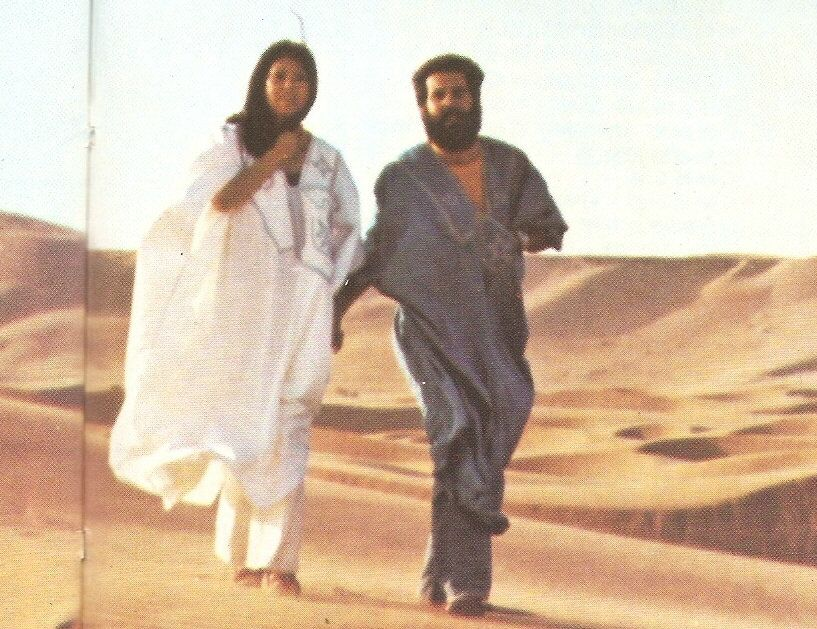与六年前遇到的西班牙人荷西·马利安·葛罗重逢。当时尚是高中生的荷西此时已大学毕业，服完兵役，也有了潜水师执照。原本荷西计划与一群朋友一同乘帆船去希腊地中海一带潜水旅游，邀请陈平担任厨师同行，但陈平对撒哈拉沙漠情有独锺。
后来荷西没有去乘帆船，却在西属撒哈拉磷矿厂找到工作。1974年，陈平在非洲沙漠小镇（西属撒哈拉的阿尤恩）与荷西结婚，开始两人在西属撒哈拉的婚姻生活。荷西送给陈平的结婚礼物是他花了一番功夫在沙漠中找到的一副完整的骆驼头骨。陈平非常喜欢这份结婚礼物，以后一直保存著。
加那利群岛与丧夫
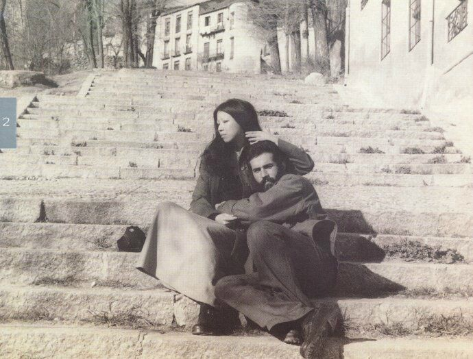1975年11月，摩洛哥组织绿色进军，35万名志愿者开进西属撒哈拉。 1976年2月西班牙撤离西属撒哈拉。三毛与荷西最后也离开西属撒哈拉，前往西班牙属地加那利群岛。荷西与三毛后来住在加那利群岛中的丹娜丽芙岛。1979年9月30日，当天正好是中秋节，荷西在三毛父母往访期间在拉帕尔马岛的海中潜水时意外丧生。三毛历经第三度情感上的打击，姐姐陈田心回忆三毛亲自用手去挖荷西的坟墓，认为如果不是父母在，她一定跟着荷西走。三毛在双亲扶持下飞返台湾暂住，稍后又回到加纳利群岛，一直无法走出伤痛。
旅行与游记
.jpg)
1981年11月，由台北《联合报》特别赞助前往中、南美洲十二国旅行半载，撰写所见所闻。1982年5月，飞返台北，作“三毛女士中南美纪行演讲会”环岛演讲，主讲“远方的故事”，出版《万水千山走遍》。
1982年任中国文化大学中文系副教授，讲授“小说创作”、“散文习作”，深受学生喜爱。1984年因健康关系辞卸教职，前往美国接受割治子宫癌手术，以写作、演讲维生。1984年5月，皇冠杂志社举办了一次“阴间之旅”活动，由吕金虎施法及带领三毛进地府一游。1985年一度丧失记忆，神经错乱。1987年3月，出版有声书《三毛说书》；7月，出版有声书《流星雨》（童话故事）。
逝世
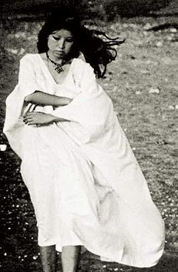1991年1月4日，因子宫内膜增生症住院治疗的三毛被发现在台北荣总病房内逝世，死因为以丝袜自缢而亡。有种说法是，三毛处于“精神耗弱”的状态，临睡前不服用安眠药无法入睡，安眠药剂量不断增加下，最终因服用剂量过重，不慎迷糊中被丝袜缠住颈部而窒息逝世，终年47岁。她的家人也澄清她不是自杀。她去世前半个月，还曾告诉母亲，她想做修女。另一方面，各种流言绘声绘影，说三毛的早逝是她热衷通灵造成的。外界也流传她是被谋杀的言论，作家张景然更在他的著作《哭泣的百合：三毛死于谋杀》中对此一说进行了一连串论证，在这之前给王洛宾写过绝笔书。